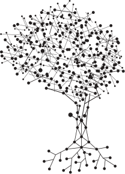

Digital
History
Association.
Building the substrate for the digital
tree of
knowledge.
The Arweave
Protocol is
a permanent
information storage system built upon a decentralized network of computers. It contains an endowment structure
to pay for permanent storage in a sustainable way. By replicating its information in many places around the
world without a centralized point of failure, the network creates a permanently reserved record of human
history, knowledge and culture.
We:
- Perform research on the core Arweave protocol and recommend improvements, while respecting its principles and immutable characteristics.
- Ensure good functioning of the primary Arweave protocol implementation.
- Advocate for the protocol's use and wide adoption.
If you'd like to help us build on the core Arweave protocol or apply for a grant, please reach out to us here.